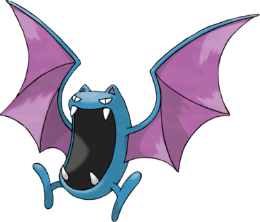

Nosferalto est une grosse chauve-souris bleu foncé. Son énorme mâchoire compte quatre crocs apparents, qu'il utilise afin de transpercer la peau de ses victimes pour en aspirer le sang. À la grande différence de sa pré-évolution Nosferapti, il possède des pieds et des yeux.